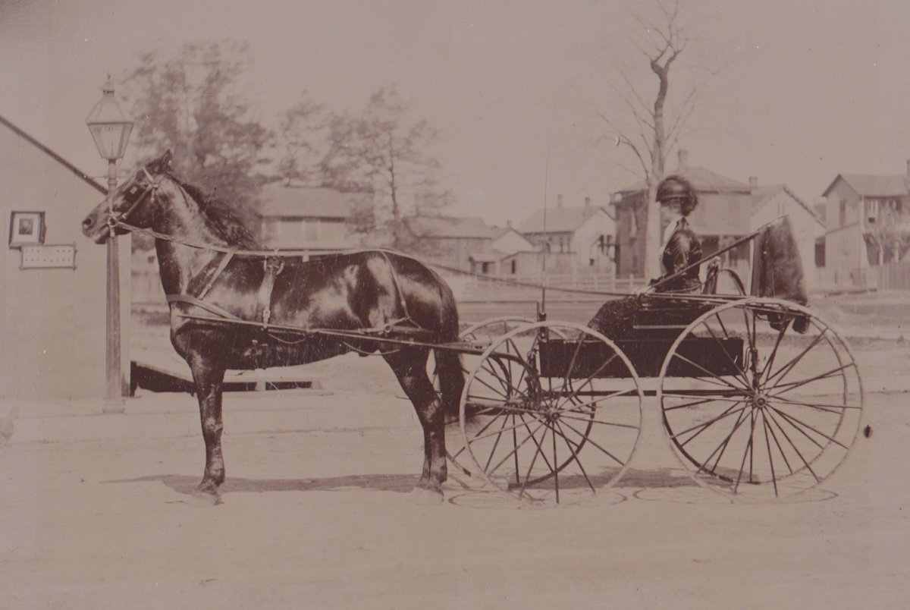

Book 1: Sarah Etta
Chapter 5: Life in Kansas City without Grace
After my little Gracie was born, I stayed with my brother and sister-in-law for a couple of months, wishing that I could take her back with me to Kansas City. I knew it wasn’t going to happen, but I wanted to have her with me. However, I could never convince my brother and his wife, nor my mother, that it was a good idea, so I finally gave up begging and returned to Kansas City without her. I had a business to run.
Within two years after returning, I purchased a second resort — this one on Third Street. I am busy going back and forth between my two resorts now, but I am definitely making a lot of money — enough to support me, to purchase clothes and jewelry, and to help support my mother, siblings, and my daughter as well. I have acquired a lot of lovely things, including a sealskin coat — which is great for Kansas City winters — and a beautiful diamond brooch.
Since returning to Kansas City, I haven’t been quite the same. Losing my lover, leaving behind my child, I have struggled to find meaning and purpose. I still want my independence and I still want to support and help my mother and my little sister, Effie. But I know that something is missing from my life. I fill the emptiness with alcohol and driving as fast as I can whenever I can.
My horse, Prince, is a Morgan. I purchased him as soon as I could afford a horse and carriage. There are many places nearby my resort where I could board him and my carriage, but there is a very convenient one right across the street from my resort on Third Street, so I can easily go back and forth and see my horse.
Prince is a gelding with a refined head and a long neck. He is lean and athletic, not like a draft horse, and his legs are longer and finer than a draft horse. He can go fast and his endurance seems much greater than my own! I like him to be well-groomed and I often go to his stable and brush him and talk to him. I bought a bridle with blinders, which helps Prince to stay focused in traffic. I use a breast-collar harness rather than a heavy draft collar, and a saddle pad which supports the shafts of the buggy.

I bought a buggy that I knew would be fast. It is high-wheeled and is considered a light road buggy. It was designed for personal transportation rather than for farm hauling. It has four large spoked wheels and a very light frame. I like the seating position, which is high and allows me to see very far ahead. The bench is a little narrow and there’s not much side support, but that makes it lighter in weight and therefore easier for Prince to pull me. That carriage is built for speed, lightness and style rather than for stability. I don’t mind that because I really love getting in that carriage and letting Prince go as fast as he can.
Some people told me that I was crazy to have such a light wagon without much support, but I love the speed I can achieve with it. Whenever I get upset and down, missing my little Grace, I enjoy getting in that buggy and giving Prince free rein. Of course, that sometimes means that I am fined for “fast driving” and it’s true that I often like to drink before I take Prince out. But it’s just too much fun to do. When I am riding in that carriage with Prince galloping as fast as he can, I think only of the speed and the excitement.
A while back, a newspaper reported on one of my races:
A very prominent official of this place, who owns a 2:40 racer, participated in a race the other day with Miss Kitty Brown of Kansas City. The race was very exciting, going through the north end of town at locomotive speed. When near the bridge down brakes was sounded, and Miss Brown was victorious.
I love it when things like that get in the paper — it certainly doesn’t hurt my businesses either.
I do enjoy those fast rides, but I also have a business to run, and I have been busy earning money, buying more places, and making sure my resorts are clean, healthy, and respectable places. There are many resorts in the area so I have to do something to make my resort unique. The outside of the buildings are all simple and straightforward: brick and mortar, mostly. But inside I want it to be classy, perhaps even opulent.
Both of my houses look much like a residential-style building, both of them have two floors. The ground floor is the public and social space; the upper floors are where the private rooms are located. In both houses, I have 12 private rooms upstairs, each simply furnished with a bed, a washstand and basin, and a mirror.
The parlour truly is the heart of the whole process. I have furnished it to project an image of respectability and comfort including upholstered furniture, rugs, mirrors, and a piano. It is in the parlour where the girls and I entertain the clients. I didn’t have a liquor license at first, but I finally got one in July of 1884 and that helped to bring more men to my resorts (however, I had been selling it illegally before that). In the parlour we serve drinks and encourage conversation. Annie Chambers charges $5 a bottle for wine so I charge only $4. I expect my girls to encourage the men to drink — just another way to make more money.
Of course, my girls live there all the time. They eat their meals together and spend a lot of their off-hours right there at the resort. I go back and forth between the two places quite a bit, but I always have quarters for myself: in both places my room is on the ground floor, which allows me to know all the comings and goings of the entire house. Recently, I also purchased a house on Woodland Avenue — this is a simple residential home, not a resort.
The parlour is genuinely important to the success of my resorts. An evening might begin with a client being admitted into the parlour; girls would begin to join him and more men would arrive. My girls are always dressed elegantly. I don’t want their clothes to be too revealing, but enough to entice the customers. Conversation, music, and drinking might go on for some time before any private arrangement is concluded. I cultivate the situation deliberately, because it attracts a wealthier clientele who values the illusion of a social call as much as anything else.
Some of the other resorts even have entertainment that keeps clients in the building for longer. I don’t always do that, but sometimes I hire someone for a Friday or Saturday night. But I always have the absolute authority in the house. I control everything.
First, of course, I always know where the money is: This is fundamental. Women living in my resorts typically pay me for their room, board, clothing, and medical expenses — all deducted from their earnings. I am not as generous as Annie Chambers, who splits the income 50/50 with her girls; I split it 60/40. This system of debt can be very difficult to escape, since a woman might always owe more than she earns. Even Annie’s 50/50 arrangement keeps women financially tied to the house. So I try to counsel my girls and help them to use their money wisely.
I decide who enters the building, who is admitted to which women, and who is thrown out. I have a Negro man, William Stone, who helps out when we need to evict a rowdy customer or one who refuses to pay. But I will brook no nonsense from men who misbehave. William has worked for me for several years. Because he is a Negro, I can pay him less, but he’s usually reliable and I like him. Some of my girls don’t care for him, but I tell them to just stay away. He doesn’t mingle with the others in the parlour; I always tell him to stay out of sight as much as possible, but most of my customers just view him as a servant (which is close to what he is).
It is important to me that I control the reputation of my establishments. We need to be reputable and clean. I control what my women wear, how they speak to the clients, and how they behave in the parlour. A woman who can converse intelligently with a wealthy businessman is worth far more to the house than one who can’t. I worked my way up through the ranks and I understand exactly what standards are required.
Some medical control is also a practical necessity. Venereal disease is an ever-present threat, and I cannot allow sick women to work; that would quickly destroy my reputation and my business. I have a regular arrangement with a physician who examines the women periodically. Dr. Smith — like us, he uses a pseudonym — can be trusted to be discreet and confidential. He is employed by several madams, including myself and Annie Chambers.
My relationship with the police is perhaps the most critical thing I have to control. I am the one who pays the periodic fines, maintains the relationship with the ward politicians, and ensures the house operates within the understood — if unofficial — boundaries that keep us from being shut down. I know a lot of the police officers and we always try to behave well when they are around. My clients come from all walks of life and occupation — including politicians, policemen, lawyers, and judges.
Sometimes we have a little fun, too. Here’s a sample from one newspaper clipping:
As a grand finale, the fair Kitty Brown of Third Street, and her attendant handmaidens, made their appearance and softly murmur “guilty” to the charge of keeping and being inmates of a naughty house. It seems that some of the maidens went on a grand spree yesterday, while Kitty was asleep, and failing to find amusement indoors, resorted to the street, where they performed the Parisian can-can in attire that closely resembled Mother Eve’s previous to the apple episode. For this the house was raided and Kitty paid $25 while Carrie Eaton, Eva Porter, Martha Eaton, Stella Goodwin and Daisy Brown [yep — that’s my sister] each paid $5. This closed the entertainment.
I love it when articles like this get in the newspaper. It is great advertising for my resorts. By this time, my sister, Julia, had arrived and started using Daisy Brown as her professional name.
So, after Gracie was born in 1879, I returned to KC and have now spent another five years here, increasing my income considerably, and helping everyone in my family. I love them — my mother, my brothers, my sisters — but sometimes it feels as though I am the one doing all the work. I hope against hope that some day I can have Grace with me — she is now six years old, and my mother tells me that my brother and his wife are thinking of moving to Pierre, in Dakota Territory, where they think that my brother can make more money as a carpenter. Sometimes he seems just like my father — always worrying and fretting about everything. I don’t like it that my daughter will be moving farther away from me. If I can just get through a few more years on my own, then I can have her join me here in Kansas City.